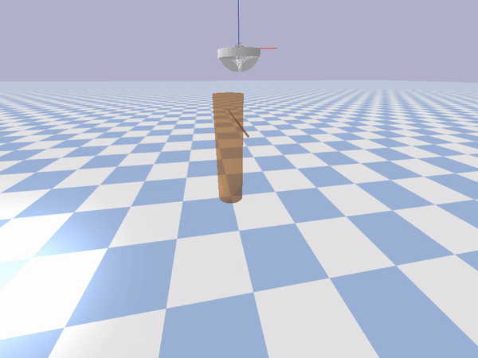
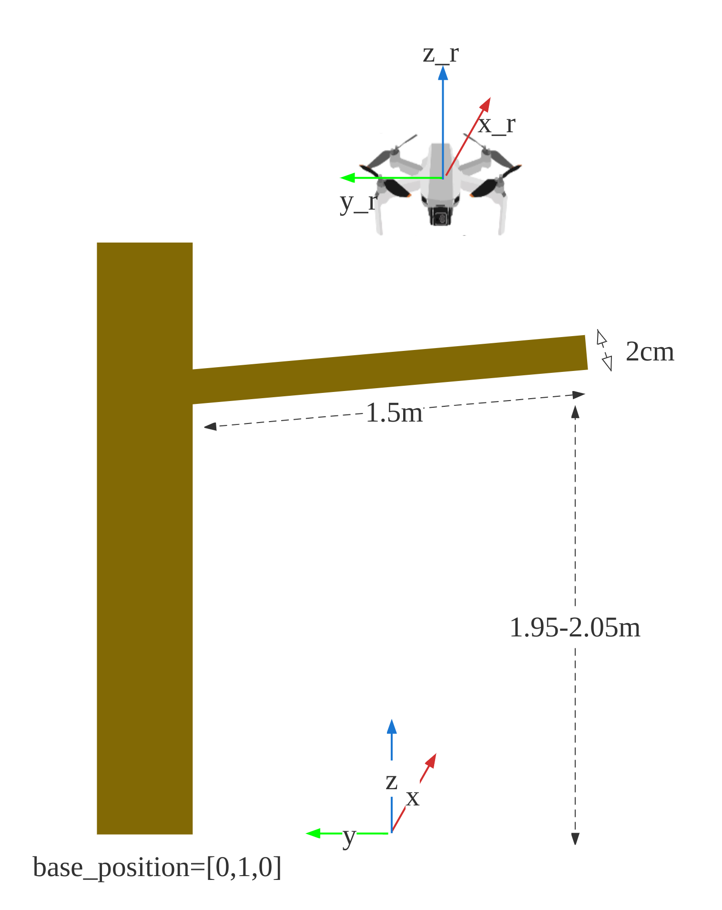
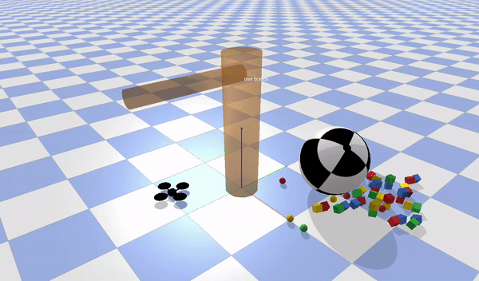
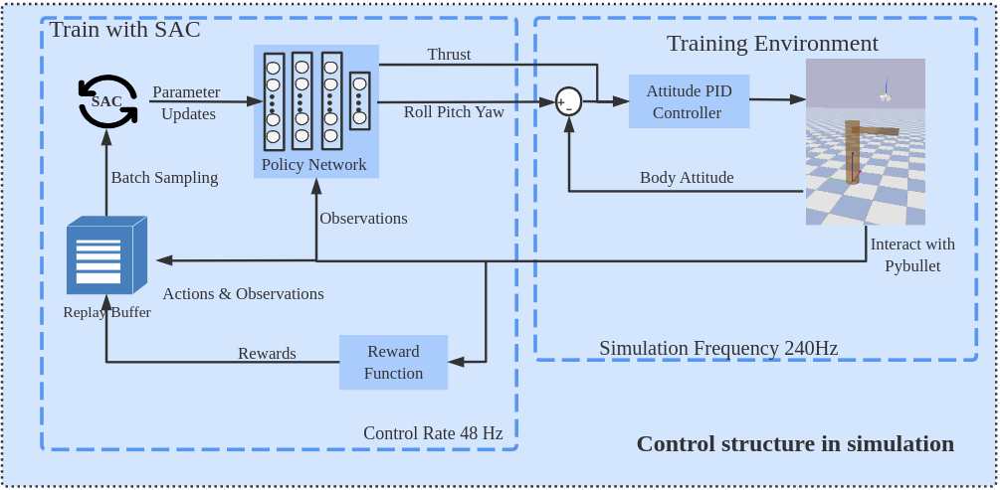
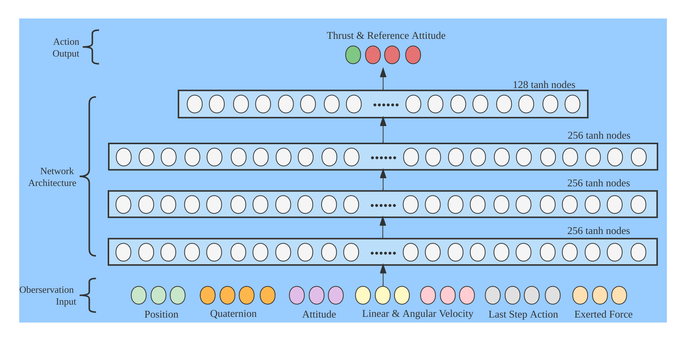
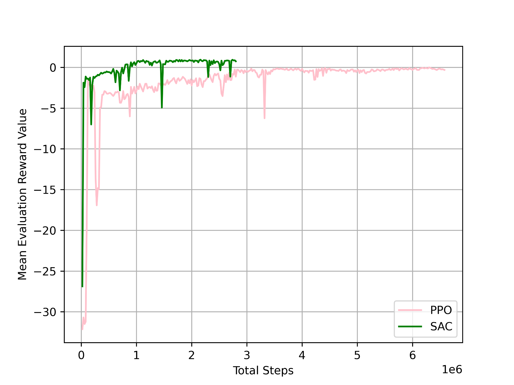
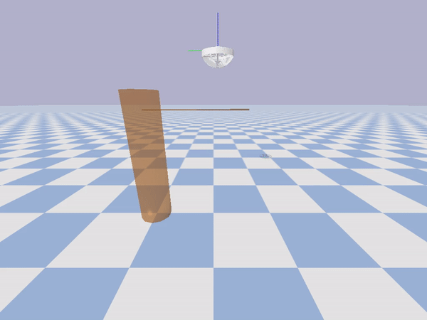
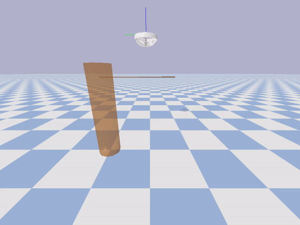
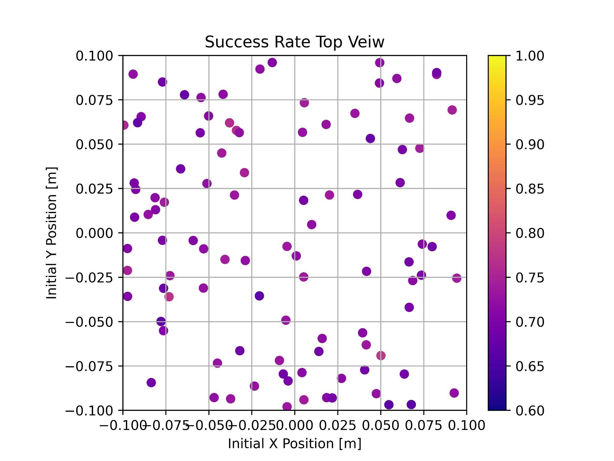

Master Thesis
Using reinforcement learning to train a drone to land on and maintain contact with flexible tree branches. The policy learns to handle varying branch stiffness through domain randomization, outputting thrust and attitude commands via a neural network controller.
Supervisors: Dr. Emanuele Aucone, Prof. Stefano Mintchev (ETH Zurich, ERL)
Examiner: Prof. Dimos Dimarogonas (KTH)








